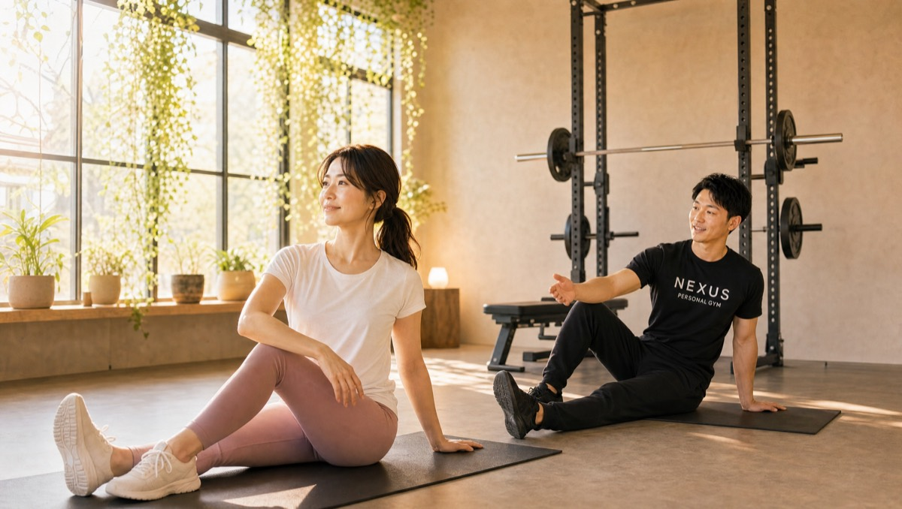

NEXUS Personal Gym ／ 神奈川県横浜市都筑区
NEXUSパーソナルジム 仲町台店｜計画的な身体づくりの完全個室ジム

横浜市都筑区仲町台、市営地下鉄ブルーライン・仲町台駅から通いやすい完全個室パーソナルジムです。仲町台は港北ニュータウンの計画都市。せせらぎ緑道が縦横に走り、街全体が「歩く」ことを前提に設計された、健康意識の高いエリアです。だからこそ仲町台店が大切にするのは、「計画性」。緑道ウォーキングだけでは変えにくい筋力や姿勢を、週1〜2回のパーソナルトレーニングで補い、3ヶ月・6ヶ月・1年という長期の設計図をトレーナーと一緒に描いていきます。計画された街に暮らすあなたに、計画的な身体づくりを。しかもオープンしたばかりの今は、予約が取りやすく、一人のトレーナーがあなたにじっくり向き合える贅沢な時期。オープニングメンバー（一期生）として、トレーナーと関係を築きながらスタートできます。ウェア・タオル・ドリンク・プロテインまで全部込みのアメニティ完備で、手ぶら通いOK。毎日8:00〜23:00・LINE予約で、家事や仕事の合間にも通えます。全国約70店舗・会員継続率96%のNEXUSブランドの指導を、計画都市・仲町台で。
- ブライダル対応
- 完全個室
- ブルーライン仲町台駅
- 段階目標を設計
- 緑道ウォーキング＋筋トレ
- 手ぶら通いOK
- NEXUS全国約70店舗
この店舗の特徴
NEXUS仲町台店は、横浜市都筑区仲町台にある完全個室パーソナルジム。市営地下鉄ブルーライン・仲町台駅から通いやすい立地です。仲町台は港北ニュータウンの一角を成す計画都市で、せせらぎ緑道が街を縦横に走る「歩く街」。戸建てやファミリー層が多く、健康や体づくりへの意識が高い住環境が広がっています。この店舗のいちばんの特徴は、そんな仲町台の暮らしに寄り添う「計画性」です。ダイエットもボディメイクも、思いつきや短期の頑張りだけでは長続きしません。大切なのは、ゴールから逆算して、3ヶ月後・6ヶ月後・1年後にどうなっていたいかを描き、そこに向けて無理のないペースで積み重ねること。仲町台店では、初回カウンセリングで一人ひとりの目標や生活習慣を丁寧に伺い、あなただけの「身体づくりの設計図」をトレーナーと一緒に作ります。もう一つの特徴が、緑道ウォーキングとの相性の良さ。仲町台にはウォーキングを習慣にしている方が多くいらっしゃいますが、「歩いているのに体型が変わらない」という声もよく聞きます。ウォーキングは素晴らしい有酸素運動ですが、筋力や姿勢を変えるには筋力トレーニングが欠かせません。仲町台店は、その「歩くだけでは変わらない部分」を週1〜2回のパーソナルで補う場所です。そしてオープン直後の今なら、予約が取りやすく、トレーナーもあなた一人にじっくり時間をかけられます。もちろん新店でも指導品質に不安はありません。全トレーナーが3ヶ月の自社教育プログラムを修了し、全国約70店舗・会員継続率96%のNEXUSブランドの基準を満たしています。完全個室のマンツーマンだから、周りの目を気にせず、自分のペースで。予約はLINEでサッと完結します。
ゴールから逆算する、あなたの設計図

計画都市・仲町台にふさわしい身体づくりとは、行き当たりばったりではなく、しっかりと設計された道のりを歩むこと。NEXUS仲町台店では、トレーニングを始める前に、必ず丁寧なカウンセリングの時間を設けます。ここで伺うのは、あなたの目標だけではありません。これまでの運動経験、普段の食事や生活のリズム、体の気になる部分、お仕事や家事のスケジュール——そうした情報をもとに、無理なく続けられる「あなただけの設計図」を描いていきます。たとえば「1年後に健康診断の数値を改善したい」「半年後の家族旅行までに体を引き締めたい」といったゴールがあれば、そこから逆算して、3ヶ月ごとの中間目標を設定します。最初の3ヶ月は体を動かす習慣づくりとフォームの習得、次の3ヶ月は負荷を上げて体の変化を実感する時期、というように、段階を追って着実に前進できるよう組み立てます。目標が明確で、道筋が見えていると、モチベーションが続きやすくなります。「今日のトレーニングが、半年後・1年後のどこにつながっているのか」がわかるからです。そしてこの設計図は、一度作って終わりではありません。体の変化や生活の状況に合わせて、トレーナーが定期的に見直し、微調整していきます。計画を立て、実行し、振り返って修正する——このサイクルを一緒に回していくことが、遠回りに見えて、実は最も確実な近道です。思いつきのダイエットで挫折を繰り返してきた方こそ、計画的な身体づくりの手応えを、仲町台店で感じていただけるはずです。
緑道ウォーキングに、筋トレを足す

仲町台のせせらぎ緑道は、四季を感じながら気持ちよく歩ける、この街の宝物のような存在です。ウォーキングを日課にしている方も多く、健康維持の習慣として本当に素晴らしいものです。ただ、こんな声もよく耳にします。「毎日欠かさず歩いているのに、体型がなかなか変わらない」「お腹まわりや二の腕は、歩いても引き締まらない」。これは決してあなたの努力が足りないからではありません。ウォーキングは有酸素運動であり、心肺機能を高め、脂肪を燃やすのに優れた運動ですが、筋肉そのものを増やしたり、姿勢を根本から整えたりする効果は限定的なのです。体を引き締める、たるみを解消する、基礎代謝を上げる——これらを実現するには、筋肉に適切な負荷をかける筋力トレーニングが欠かせません。特に、お腹・下半身・背中といった大きな筋肉は、日常の歩行だけでは維持しにくく、意識的に鍛える必要があります。そこでご提案したいのが、「ウォーキングをやめる」のではなく、「ウォーキングに筋トレを足す」という考え方です。緑道での有酸素運動は続けながら、週に1〜2回だけ、仲町台店でパーソナルトレーニングを取り入れる。たったそれだけで、有酸素運動と筋力トレーニングの相乗効果が生まれ、歩くだけでは届かなかった変化が現れ始めます。姿勢が整えば、歩く姿そのものも美しくなり、緑道での散歩がもっと楽しくなるはずです。仲町台店では、あなたの体の状態に合わせて「歩くだけでは変わらない部分」にピンポイントでアプローチ。完全個室でフォームを一つひとつ確認しながら進めるので、筋トレが初めての方でも安心して取り組めます。歩く習慣に、変わる習慣を足しませんか。
オープン直後の、今だけの通いやすさ

新しくオープンした店舗には、その時期ならではの大きなメリットがあります。それが「予約の取りやすさ」と「トレーナーとの距離の近さ」です。仲町台店は2026年にオープンしたばかりの新店。会員がまだ増えすぎていない今だからこそ、日中の時間でも仕事帰りの夜でも、希望の時間帯で予約を取りやすい環境が整っています。人気のパーソナルジムでは「予約が取りにくくて通いづらい」という声もありますが、オープン直後の仲町台店なら、その心配がほとんどありません。さらに、この時期に入会される方は、いわば仲町台店の「一期生」。トレーナーがあなた一人にじっくり時間をかけられるので、身体の状態や目標、生活習慣をきめ細かく把握してもらいながら、丁寧に設計図を描いてスタートを切れます。オープニングメンバーとしてトレーナーと関係を築いていく時間は、後から入会する方には得られない、今だけの特別な体験です。「パーソナルジムは気になっていたけれど、なかなか一歩を踏み出せなかった」——そんな方にとって、地元・仲町台に新店ができた今は、始めるのに絶好のタイミング。予約が取りやすく、じっくり向き合ってもらえる今のうちに、ぜひ無料体験にお越しください。オープン直後のゆとりある環境で、あなたの身体づくりを気持ちよくスタートできます。
ブルーライン・仲町台駅からの動線
NEXUS仲町台店は、横浜市都筑区仲町台1-28-10 コンフォート仲町台201にあります。市営地下鉄ブルーライン・仲町台駅から通いやすい立地で、都筑区にお住まいの方はもちろん、ブルーライン沿線で通勤・通学される方にも便利にご利用いただけます。仲町台駅は、隣接するセンター南・センター北とブルーラインで直結。港北ニュータウンの中心エリアへも一本でアクセスでき、新羽・北新横浜方面からも通いやすい場所です。センター南・センター北でのお買い物や用事のついでに立ち寄る、という通い方もしやすいのが仲町台店の魅力。都筑区は戸建て・ファミリー層が多く、日中は主婦・主夫の方が、夜は仕事帰りの方が、それぞれの生活リズムに合わせて通えます。毎日8:00〜23:00の営業なので、お子さまを送り出した後の日中でも、お仕事帰りの夜でも、無理なく通えます。ウェア・水・タオル・プロテインまですべてアメニティとしてご用意しているので、持ち物はバッグひとつ、手ぶらのまま通えます。予約・変更はLINEで完結し、6時間前まで無料でキャンセル可能。緑道の散歩コースの延長で、生活に溶け込む完全個室ジムです。仲町台・センター南・センター北・新羽など、都筑区・ブルーライン沿線で通いやすいパーソナルジムをお探しの方は、ぜひ一度お越しください。
NEXUSブランドの実績
仲町台店はオープンしたばかりの新店のため、まだGoogleマップの口コミは集まっていません（現在収集中です）。しかし、指導の品質を裏づけるのは、NEXUSブランド全体で積み上げてきた実績です。NEXUSは全国約70店舗を展開し、会員継続率は96%。全トレーナーが3ヶ月の厳しい自社教育プログラムを修了してからデビューし、「優しく寄り添う指導」を全店共通の基準としています。仲町台店のトレーナーも、同じ教育を受けたメンバーです。
同じ横浜市内の系列店では、横浜元町店がGoogle口コミ★5.0（87件）、岸根公園店が★5.0（53件）、綱島店が★5.0（31件）という高い評価をいただいています（2026年7月時点）。これらの評価は、ブランド全体で共有される指導品質の証です。仲町台店も、この同じ基準でみなさまをお迎えします。
新店だからと不安に思う必要はありません。むしろオープン直後の今は、予約が取りやすく、一人のトレーナーがあなたにじっくり向き合える贅沢な時期です。全国で培った確かな指導を、できたばかりの仲町台店で、ゆとりある環境で受けられます。まずは無料体験で、トレーナーの質とジムの雰囲気を、あなた自身の目で確かめてみてください。仲町台店の最初のメンバーとして、一緒にこの店舗を育てていける今を、ぜひ楽しんでいただければと思います。
まずは無料体験から
「仲町台で完全個室のパーソナルジムを探していた」「緑道ウォーキングだけでは体型が変わらず悩んでいた」「計画的に体づくりを進めたい」——そんな方こそ、まずは無料体験からお試しください。仲町台店の無料体験は、カウンセリングであなたの目標や運動経験、生活習慣をじっくり伺うところから始まります。その上で、姿勢や身体のクセをチェックし、実際にトレーニングを体験。フォームを丁寧に確認しながら進めるので、運動が久しぶりの方でも安心です。オープン直後の今なら予約も取りやすく、トレーナーがあなたにたっぷり時間をかけて、身体づくりの設計図を一緒に描けます。体験も手ぶらでOK。ウェア・タオル・ドリンクもすべてご用意しているので、緑道の散歩や買い物の合間に、そのままお立ち寄りいただけます。ブルーライン・仲町台駅から通いやすく、無理な勧誘は一切ありません。計画都市・仲町台で始めるNEXUSの一期生として、気持ちのいいスタートを切りませんか。まずは気軽に、無料体験へお越しください。
結婚式前のボディメイクを、仲町台で

「ドレスの試着で二の腕が気になった」「背中の開いたデザインを、体型を理由に諦めたくない」——挙式という動かせない期日があるからこそ、ボディメイクは最後までやり切れます。仲町台店では、まず挙式日とドレスのデザインをうかがい、背中・二の腕・デコルテ・ウエストという、ドレスでもっとも視線が集まる部位から優先順位をつけていきます。完全個室のマンツーマンだから、人目を気にせず自分の身体とだけ向き合えます。

残された日数によって、やるべきことは変わります。仲町台店では挙式日から逆算した90日プラン・60日プランを用意し、「いつまでに、どの部位を、どこまで」を最初に設計します。極端な食事制限で当日フラフラ……ということがないよう、その日のコンディションから逆算する無理のない指導で、式当日にピークを合わせます。会員の約85%が女性で、ブライダルのご相談は日常的。体に不必要に触れないノータッチ指導を基本にしているので、はじめての方も安心です。

週を追うごとに、ドレスの試着で鏡に映る自分が変わっていきます。背中がすっと伸び、二の腕のたるみが引き締まり、デコルテに華やかさが出る。「このデザインで大丈夫かな」から「このドレスを選んでよかった」へ——目標が数字ではなく“当日の自分の姿”だからこそ、モチベーションが途切れません。仲町台エリアで挙式を予定されている方は、エリア内の式場への下見や打ち合わせの動線に、そのままトレーニングを組み込めます。

迎えた挙式当日。積み重ねた90日・60日は、鏡の前の安心感になって返ってきます。姿勢よく背筋を伸ばして立ち、写真のどの角度でも堂々といられる——それは、頑張ってきた自分だけが手にできる自信です。仲町台店は、その一日のために全力で伴走します。

挙式は、新しい生活のスタートでもあります。せっかく作り上げた身体を、そのまま新生活の習慣に。仲町台店は毎日8:00〜23:00営業・月4回18,000円（1回4,500円〜）から続けられるので、挙式後の体型維持から、将来の産後の体型戻しまで長く伴走できます。全国約70店舗のネットワークがあるため、引っ越しや里帰りの際も最寄り店舗へ。「一生に一度」のために始めた習慣が、その後の人生を支える土台になります。
挙式まで残り80日で駆け込みました。背中の開いたドレスに合わせて、二の腕と背中を中心にプランを組んでもらい、当日は自信を持って写真に写れました。式後もそのまま通っています。
上記はサービス内容をわかりやすく伝えるためのモデルケース（イメージ）であり、実在するお客様の口コミではありません。Google口コミは本ページ内の該当セクションに実際の内容を要約して掲載しています。
挙式日からの逆算タイムライン｜ブライダル専用ページを見る料金プラン
入会金は通常55,000円、無料体験当日入会で15,000円（税込）に割引。AI食事指導は月額3,000円（税込）。全店舗共通の料金です。
アクセス
- 店舗名
- NEXUSパーソナルジム 仲町台店
- 住所
- 〒224-0041
神奈川県横浜市都筑区仲町台1-28-10 コンフォート仲町台201 - 最寄り駅
- 市営地下鉄ブルーライン 仲町台駅
- 営業時間
- 毎日 8:00〜23:00
- 電話番号
- 050-1790-8499
仲町台店のよくある質問
Q仲町台・都筑区にパーソナルジムはありますか？+
Qウォーキングはしていますが体型が変わりません+
Qセンター南・センター北からも通えますか？+
Q挙式まで3ヶ月ですが、結婚式に間に合いますか？+
Qドレスで気になる背中や二の腕を集中的に絞れますか？+
Q結婚式が終わった後も通い続けられますか？+
よくある質問（全店共通）
料金・制度などNEXUS全店に共通するご質問です。さらに詳しくは110問のFAQをご覧ください。
Q料金はいくらですか？+
Q手ぶらで通えますか？+
Qキャンセルはいつまでできますか？+
Q食事指導はありますか？+
Qトレーナーはどんな人ですか？+
Q女性会員は多いですか？+
Q体験の流れは？+
NEXUSパーソナルジムの特徴・料金をもっと見る